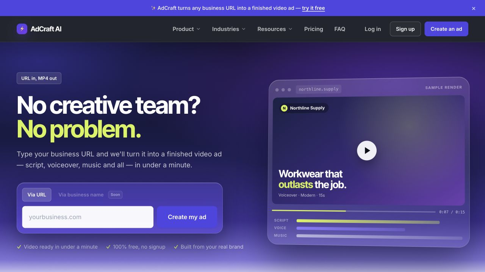

AI engineer & full-stack developer
Srujan S.
Turning complex ideas into
intelligent experiences.
From AI models to the interfaces around them.
Built with curiosity. Shipped with care.
Selected work.
From the first experiment
to the production pipeline.
AI & Machine Learning
AdCraft AI
Morpheus
Open-source AI agent supply-chain vulnerability scanner with 95% detection accuracy. Automated adversarial testing in Docker sandboxes with LLM-generated remediation reports in sub-30-second scans. Detected code injection, SSRF, and prompt injection. Led 5-person team.
Skintel AI
RAG Chatbot
Production AI chatbot with optimized document indexing. Reduced response latency by 25% and manual support dependency by 40%. Real-time LLM backend integrated with React frontend.

Explore the toolkit
RAG Systems
Retrieval Augmented Generation with optimized prompt pipelines for production chatbots
LLM Integration
Groq, GPT-based models, LangChain, API orchestration, and real-time conversation systems
Computer Vision
ResNet-50 CNN architectures for image classification and diagnostic systems
AI Security (AIBOM)
AI/SBOM generation, OSV vulnerability scanning, CycloneDX/SPDX compliance, supply-chain security
NLP & Voice AI
Text-to-Speech (Kokoro TTS), Speech-to-Text, multilingual language processing
Frameworks
PyTorch, TensorFlow, Scikit-Learn, Pandas, NumPy, LangChain, Prompt Engineering
Full-Stack Development
AdCraft AI
EW Visualization
Morpheus
Full-stack security platform with React frontend and Python/FastAPI backend. Parallel processing with 90% cache hit rate. Led 5-person team building the full architecture.
Skintel AI
Explore the toolkit
React.js
Modern frontend with hooks, state management, and real-time UI updates
Next.js
Full-stack React framework with SSR, API routes, and Vercel deployment
Django & FastAPI
RESTful APIs, WebSocket connections, and scalable backend architecture
Docker & CI/CD
Containerization, deployment pipelines, and production orchestration
Cloud Services
AWS (S3, Elastic Beanstalk), GCP, Oracle Cloud Infrastructure, Vercel
HTML5 Canvas
60 FPS real-time graphics, coordinate transforms, animation loops
Backend Engineering
AdCraft AI
Morpheus
Backend security scanner with parallel processing (90% cache hit), Docker sandbox execution for adversarial testing, and LLM-powered remediation report generation in sub-30-second scans.
SISA PRISM
Production multi-stage scan pipeline for enterprise AI asset scanning. Integrates manifest discovery, registry enrichment, and standards-compliant SBOM generation, reducing manual audit effort by 60%.
Skintel AI
Backend handling 500+ daily image analysis requests with secure AWS S3 storage, custom auth, and 99.5% production uptime across a full Django REST stack.
DNA Cryptography
High-throughput cryptographic API processing 10MB+ datasets with sub-second encryption. CI/CD pipeline handles 500+ concurrent requests at 99.8% uptime with Docker orchestration.
Explore the toolkit
Python & FastAPI
High-performance async APIs with Pydantic validation, thread-pool execution for CPU-bound tasks
Database Design
PostgreSQL, MySQL schema design, indexing, and query optimization
Security Pipelines
OSV scanning, CycloneDX/SPDX SBOM, AIBOM generation, CVE enrichment workflows
Cloud & DevOps
Docker, AWS, GCP, Oracle Cloud Infrastructure, CI/CD, Vercel, Render
API Integration
REST, WebSocket, Groq API, public package registries, advisory feeds
Media Processing
FFmpeg video/audio pipelines, Playwright browser automation, BeautifulSoup scraping
A builder,
by instinct.
Global Academy of Technology
I’m Srujan, a developer based in Bengaluru, working at the intersection of artificial intelligence and software engineering.
I build across the stack: training models, connecting APIs, and shaping the interfaces people use. My work spans AI supply-chain security, generative video, computer vision, and real-time visualization.
I’m drawn to complex problems and the thoughtful, useful systems that solve them.
More about my backgroundLearning by building.
Real systems.
Real-world experience.
SISA Information SecurityAI Research InternApr 2026 – Present
- Spearheaded AIBOM & SBOM generation on SISA PRISM Discovery — a production AI asset scanning platform — enabling end-to-end visibility into AI model supply chains for enterprise clients.
- Engineered multi-stage scan pipelines via FastAPI integrating OSV vulnerability scanning, deps.dev/registry enrichment, and CycloneDX/SPDX-compliant SBOM generation, cutting manual audit effort by 60%.
- Automated dependency enrichment workflows consuming public registries and OSV advisory feeds, surfacing CVEs and EPSS-scored vulnerabilities with actionable remediation metadata.
DRDO CASDICSoftware InternJan 2026 – Present
- Built radar visualization tool using HTML5 Canvas API with requestAnimationFrame(), achieving 60 FPS with polar-to-Cartesian coordinate transformations and gradient-based sweep animations.
- Engineered JavaScript data structure for threat configs enabling O(1) modifications with event-driven updates and automatic re-rendering via data-attribute binding.
- Developed modular panel system handling 16+ collapsible panels using trigonometric calculations aligned with aviation's ±180° standards.
Evtaar TechnologiesMachine Learning InternAug 2025 – Nov 2025
- Implemented RAG with optimized prompt pipelines and document indexing, increasing AI chatbot response accuracy by 30%.
- Optimized LLM request handling and API orchestration, reducing average response latency by 25%.
- Integrated external medical/knowledge APIs, reducing manual support dependency by 40%.
Built under pressure.
Code Breaker’s Challenge
Global Academy of Technology · 2025
A Hugging Face RAG medical chatbot. The judges’ top pick.
Colossus 2.0
Dr. AIT Technical Club · 2024
Team lead. A top-tier finish among 40+ teams in a 24-hour build.
Sandbox Hackathon
Dayananda Sagar College · 2026
Team lead. Rapid AI prototyping under competition constraints.
Let’s build
something good.
Have an idea, a role, or an interesting problem?
I’d love to hear about it.